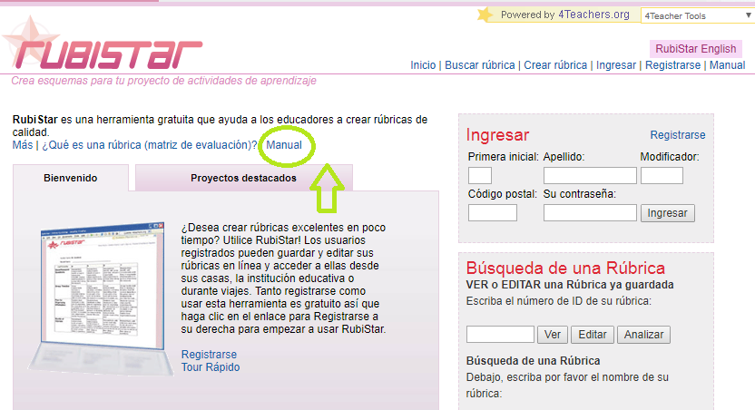
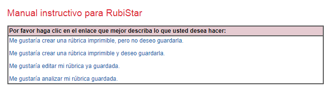
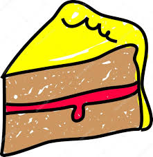
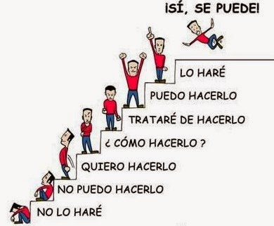

Fase cuatro.Evaluación del alumnado.
Una de las dudas más habituales entre nosotros, los docentes, es la forma y el momento de evaluar al alumnado cuando hace uso de las redes sociales como herramienta en su proceso de aprendizaje.
Sin embargo, podemos guiarnos por parámetros como pueden ser su participación en debates generados en Facebook o Twitter sobre la oración compuesta, su originalidad a la hora de presentar la actividad etc.
Desde mi punto de vista, la herramienta tecnológica que mejor nos va permitir la evaluación del trabajo desempeñado por nuestro alumnado en las redes sociales propuestas para ello va a ser el uso de RÚBRICAS.
Así, elaboraremos una rúbrica que nos permita medir, entre otras cuestiones:
Interacción con otros compañeros
Coherencia en la aportación o trabajo realizado.
Uso adecuado de terminología específica.
Aportación de la actividad dentro del tiempo estipulado.
Originalidad y creatividad de su propuesta.
Refleja dominio y conocimiento de los contenidos didácticos.
En el módulo uno, ya os hacía mención a la importancia del uso de las rúbricas para la evaluación del alumnado. En este caso, os voy a proporcionar 3 herramientas tecnológicas que os faciliten la creación de vuestras propias rúbricas**:
Rubi Star teacher
Elaboración o consulta de rúbricas ya confeccionadas por otras personas por medio de esta herramienta. RubiStar proporciona una manual instructivo que os guía en el proceso de elaboración de vuestra rúbrica según vuestra área, intereses adaptándola a las características de las actividad objeto de evaluación.


En el siguiente enlace, se refleja un ejemplo de rúbrica generado con RubiStar elaborada para evaluar una aportación a un foro. En nuestro caso, los podríamos aplicar a la posible valoración llevada a cabo por un alumno a la actividad presentada por otro compañero en Facebook, Twitter o Pinterest.
CoRubrics
Todos los docentes somos conscientes de la importancia que adquiere en la evaluación del alumnado tanto la heteroevaluación como la AUTOEVALUACIÓN, COEVALUACIÓN entre el alumnado. Así, CoRubrics, desarrollada con Google Apps, permite que el alumnado sea evaluado tanto por el profesor como por él mismo y el resto de los compañeros haciendo uso de una rúbrica.
En el siguiente vídeo, se explica el funcionamiento de CoRubrics. Por medio de una rúbrica, se confecciona un formulario, procesa la información y los resultados son enviados vía e-mail de manera individual (se puede agregar comentario).
En el proceso de creación de la rúbrica orientada a la coevaluación, los alumnos pueden ser los encargados de crear la rúbrica por grupos para, posteriormente, realizar una puesta en común entre toda la clase y así elegir un único modelo de rúbrica.
Del mismo modo, os proporciono el siguiente manual de usuario.
Y con esto y un
 ...
Y recuerda
